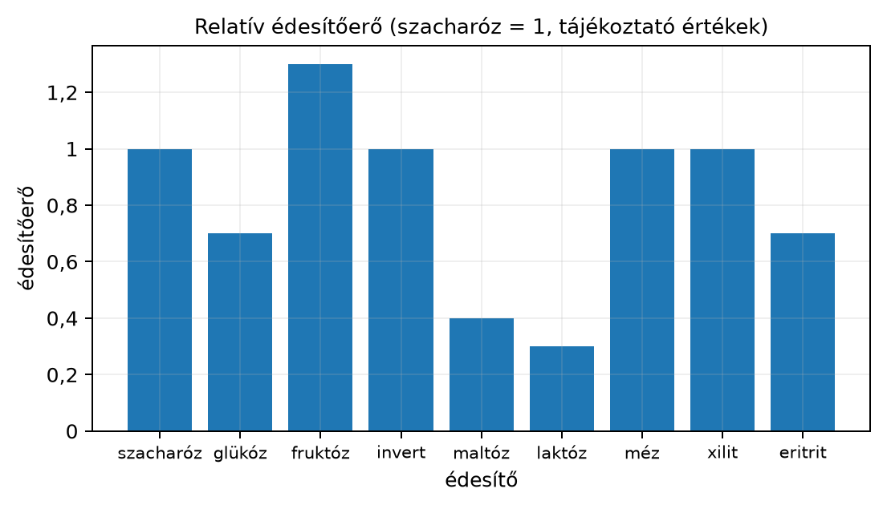

A cukrászüzemben a tiszta répacukor, azaz szacharóz a leggyakoribb édesítő. Mégis sok receptben más édesítőt vagy édesítőkeveréket ír elő a technológia. Reggel a fagylaltkészítő azt tapasztalja, hogy a csak szacharózzal készült fagylaltkeverék a fagyasztás után túl kemény, jeges, és hamar édesen fárasztó. A bonbonkészítő fondánja néhány nap alatt bekeményedik, mert a cukor kristályosodik. A mézeskalácsos tésztája száraz marad, ha csak kristálycukrot tesz bele. A diétás termékeknél pedig olyan édesítőre van szükség, amelyik nem emeli meg a vércukorszintet, vagy kevesebb energiát ad.
A válasz az, hogy az édesítőt nemcsak az édes íz miatt tesszük a termékbe. A cukor egyszerre ad édességet, szárazanyagot, testességet, nedvességmegkötő képességet, fagyáspont-csökkentő hatást és barnulási színt. Ha ezek közül csak egyet is megváltoztatunk, a termék állaga, eltarthatósága és érzékszervi minősége is megváltozik. Ezért ebben az alfejezetben a répacukor mellett használt természetes édesítőket hasonlítjuk össze: a szőlőcukrot, a gyümölcscukrot, a malátacukrot, a tejcukrot, az invertcukrot, a keményítőszörpöket, a mézet és a cukoralkoholokat.
Az előző alfejezetben megismertük a szacharóz tulajdonságait. Most arra építünk: mi történik akkor, ha a szacharózt részben vagy egészben kicseréljük, és hogyan kell ezt számolással, biztonságosan elvégezni.
Képzeljünk el három azonos tömegű, átlátszó tálat. Az elsőben szacharóz, a másodikban glükózszirup, a harmadikban fruktóz van. Ugyanannyi grammot teszünk a nyelvünkre: a szacharóz édes, a glükózszirup kevésbé édes, a fruktóz pedig a legédesebbnek tűnik. Ugyanezt a három anyagot fagylaltkeverékbe tesszük: a fruktózzal készült keverék lágyabban fagy és a legédesebb, a glükózszirupos keverék testesebb, krémesebb és kevésbé édes, a szacharózos keverék pedig keményebbre fagy. Ez a kép mutatja, hogy az édesítő kiválasztása mindig két kérdés: mennyire édes, és mit tesz a termék állagával.

Az ábra jól mutatja, hogy a „cukor” szó nem jelent azonos édességet. A gyümölcscukor édesebb, a tejcukor és a malátacukor viszont jóval kevésbé édes a répacukornál.
Definíció. Monoszacharid az olyan szénhidrát, amely egyetlen cukoregységből áll. A cukrászatban legfontosabb képviselői a glükóz (szőlőcukor, dextróz) és a fruktóz (gyümölcscukor).
Definíció. Diszacharid az olyan szénhidrát, amely két cukoregységből áll. Ilyen a szacharóz (répacukor: glükóz + fruktóz), a maltóz (malátacukor: glükóz + glükóz) és a laktóz (tejcukor: glükóz + galaktóz).
Definíció. Invertcukor a szacharóz savas vagy enzimes hidrolízisével keletkező, közel azonos mennyiségű glükózt és fruktózt tartalmazó keverék. Az elnevezés onnan származik, hogy a hidrolízis során a polarizált fény forgatási iránya megfordul, „invertálódik”.
Definíció. Relatív édesítőerő () azt mutatja meg, hogy az adott édesítő azonos tömegű adagja hányszor édesebb a szacharóznál. A szacharóz referenciaérték. Az édesítőerő nem egzakt fizikai állandó, hanem érzékszervi vizsgálattal meghatározott, hőmérséklettől, savasságtól és a termék összetételétől függő érték.
Definíció. Cukoralkoholok (poliolok) olyan szénhidrát típusú vegyületek, amelyek kémiailag nem klasszikus cukrok, hanem cukrok redukálásával előállított, alkoholcsoportokat tartalmazó molekulák. A cukrászatban leggyakoribbak a szorbit, a maltit, a xilit és az eritrit.
Ezekre a fogalmakra épül az édesítőcsere. A csere során két dolgot kell figyelni: az édesítőerőt és a szárazanyag-tartalmat.
A szőlőcukor a növényekben és a keményítő lebontása során is előforduló monoszacharid. Kristályos formában fehér por vagy apró kristály. Cukrászati szempontból legfontosabb tulajdonságai:
A glükóz tiszta kristályos formában ritkábban kerül közvetlenül receptbe, mert erős vízmegkötése és viszonylag alacsony édessége miatt más hatása van, mint a szacharóznak. Sokkal gyakrabban keményítőszörp, azaz glükózszirup formájában használjuk, amelyet később mutatunk be.
A fruktóz a gyümölcsökben és a mézben is előforduló monoszacharid. A szacharóznál édesebb, különösen hidegen. Édesítőereje szobahőmérsékleten körülbelül , hideg termékekben kissé nagyobb, meleg termékekben kissé kisebb lehet (ellenőrizendő: érzékszervi adatlap).
Technológiai szempontból a fruktóz:
A gyümölcscukrot gyakran használják diétásnak szánt termékekben is, de fontos tudni, hogy a fruktóz nem kalóriamentes, ugyanúgy szénhidrát, mint a szacharóz, bár a szervezetben más úton hasznosul.
A maltóz két glükózból álló diszacharid. A malátaszirupban, malátakivonatban, sörben és a kenyér kérgében is megtalálható. Édesítőereje kicsi, körülbelül (jelölve). A cukrászatban elsősorban:
A maltóz önmagában nem az édesítés fő eszköze, hanem ízesítő és színező összetevő.
A laktóz a tejben található diszacharid. Édesítőereje nagyon kicsi, körülbelül (jelölve). A cukrászatban a tejporon, a tejen és a tejszínen keresztül kerül a termékekbe. Fontos szerepe:
A laktóz nem tartozik a 14 jelölendő allergén közé, de a tej igen, ezért a tejcukor forrását mindig a tejallergén-kezeléssel együtt kell kezelni.
A négy egyszerű cukrot a következő táblázat foglalja össze:
| Édesítő | Kémiai csoport | Relatív édesítőerő (jelölve) | Legfontosabb cukrászati szerep |
|---|---|---|---|
| Szacharóz | diszacharid | 1,0 | referenciaédesítő |
| Glükóz (szőlőcukor) | monoszacharid | 0,7 | vízmegkötés, fagyáspontcsökkentés, barnulás |
| Fruktóz (gyümölcscukor) | monoszacharid | 1,3 | édesítés, vízmegkötés, erős fagyáspontcsökkentés |
| Maltóz (malátacukor) | diszacharid | 0,4 | malátás íz, aranyszín, erjedés |
| Laktóz (tejcukor) | diszacharid | 0,3 | szárazanyag, barnulás, nem tolakodó édesség |
Az invertcukor a cukrászati technológia egyik legfontosabb félkész édesítője. Savval, invertáz enzimmel vagy hosszabb savas főzéssel a szacharóz glükózra és fruktózra bomlik. A keletkező keverék:
Az invertcukrot a cukrászüzemben gyakran készen vásárolt invertcukorszirupként használjuk. Jellegzetes felhasználási helyei:
Az invertcukor nem „mesterséges” anyag; a mézben is jelentős mennyiségben található.
A keményítőből savval vagy enzimekkel lebontott, részlegesen hidrolizált termékeket összefoglalóan keményítőszörpnek vagy glükózszirupnak nevezzük. A keményítő hosszú glükózláncokból áll. Minél tovább bontjuk, annál több rövid láncú molekula, glükóz és maltóz keletkezik.
Definíció. A DE-érték (dextrózegyenérték) azt mutatja meg, hogy a keményítőszörp szárazanyag-tartalmának hány százaléka viselkedik redukáló cukorként, tiszta szőlőcukorra átszámítva. A DE-érték tehát a keményítő lebontottságának gyakorlati mutatója. A tiszta glükóz DE-értéke elvileg 100, a nagyon enyhén bontott keményítőé kicsi.
A DE-érték nagyon sokat elárul a szörp technológiai viselkedéséről:
| DE-tartomány (jelölve) | Jellemző tulajdonság | Cukrászati felhasználás |
|---|---|---|
| Alacsony DE (kb. 20–38) | sűrű, kevésbé édes, erősen testességet ad | rágós állag, karamell, fagylalt testessége |
| Közepes DE (kb. 38–58) | kiegyensúlyozott édesség, jó vízmegkötés | fagylalt, fondán, tükörbevonó |
| Magas DE (kb. 58–70) | édesebb, hígabb, erősen higroszkópos | fagylalt fagyáspont-csökkentés, fényes mázak |
Minél magasabb a DE-érték, annál édesebb, annál hidrolizáltabb, annál kevésbé viszkózus, és annál jobban csökkenti a fagyáspontot. A cukrászati glükózszirup jellegzetesen közepes DE-értékű, ezért a fagylaltkeverékben nem teszi túl édessé a terméket, de krémesebbé, jobban formázhatóvá teszi.
A gyakorlatban a glükózszirup körülbelül – szárazanyag-tartalmú folyadék (a víztartalmat a gyártói adatlap adja meg; ellenőrizendő). Ezért amikor glükózsziruppal dolgozunk, mindig vizet is beviszünk a receptbe. Ezt a számításoknál figyelembe kell venni. A glükózszirup tájékoztató relatív édesítőereje a DE-értéktől függően kb. – (jelölve; ellenőrizendő: gyártói adatlap); a feladatainkban -del számolunk.
Az izoszörp (izoglükóz, gyakran magas fruktóztartalmú keményítőszörp) olyan keményítőszörp, amelynek glükóztartalmát enzimatikusan részben fruktózzá alakították. Ezzel növelik az édesítőerejét. Az izoszörp az élelmiszeriparban elterjedt, a cukrászüzemben azonban ritkábban használt alapanyag. Édesítőereje a fruktóztartalomtól függ, ezért csak a gyártói adatlap alapján lehet pontosan számolni vele.
A méz a mézelő méhek által előállított, jellegzetes élelmiszer. Összetétele nagyjából:
A méz tehát természetes invertcukor-tartalmú, folyékony, enyhén savas kémhatású édesítő. Fajtája a virágzási forrástól függ: akác, hárs, repce, napraforgó, vegyes virágméz, erdei méz. Az akácméz például sok fruktózt tartalmaz, ezért lassabban kristályosodik; a repceméz viszont sok glükózt tartalmaz, ezért gyorsan, finom szemcsésen kristályosodik. A kristályosodás nem romlás, hanem természetes folyamat, amelyet óvatos, alacsony hőmérsékletű melegítéssel lehet feloldani.
A méz cukrászati felhasználásánál figyelni kell a hőkezelésre:
A mézre külön uniós irányelv vonatkozik, amely a megnevezést, a forgalmazást és a kezelés feltételeit szabályozza.
Jogszabály. A méz megnevezését, összetételi jellemzőit és forgalomba hozatali feltételeit a 2001/110/EK irányelv és a Magyar Élelmiszerkönyv vonatkozó kötelező előírása tartalmazza (ellenőrizendő: aktuális módosítás, MÉ-előírás száma). A mézhez cukrot vagy más édesítőt hozzáadni tilos, ha a terméket „méz” néven forgalmazzák. A hőkezelés és a szűrés csak a jogszabályi keretek között megengedett, ezért az üzemi gyakorlatot a beszállítói specifikációval és a hatósági útmutatóval kell egyeztetni.
Higiénia. A méz egyévesnél fiatalabb csecsemőnek nem adható, mert Clostridium botulinum spórát tartalmazhat (ellenőrizendő: hatályos élelmiszer-biztonsági útmutató). A cukrászatban a méz tárolása során a fénytől és nedvességtől óvjuk, mert a méz higroszkópos, és erjedésnek indulhat, ha víztartalma megnő.
A cukoralkoholok, más néven poliolok a cukormentes vagy csökkentett cukortartalmú termékek fontos édesítői. Nem alkoholos italok összetevői, hanem szénhidrátok. A négy legfontosabb:
A poliolok közös tulajdonsága, hogy a szájban nem fermentálódnak olyan mértékben, mint a cukor, ezért kedvezőbbek a fogak szempontjából. Ugyanakkor nagyobb mennyiségben fogyasztva puffadást, hasmenést okozhatnak. Ezért a csomagolt élelmiszeren fel kell tüntetni a figyelmeztetést.
Jogszabály. Az élelmiszerek jelöléséről szóló 1169/2011/EU rendelet és a Magyar Élelmiszerkönyv előírja, hogy a poliolokat tartalmazó termékeknél fel kell tüntetni: „túlzott fogyasztása hashajtó hatású lehet” (ellenőrizendő: pontos szöveg, feltételek). A „cukormentes” állítás csak akkor alkalmazható, ha a termék legfeljebb cukrot tartalmaz -ban (ellenőrizendő: 1924/2006/EK rendelet). A cukoralkoholok adalékanyagként való felhasználását a 1333/2008/EK rendelet szabályozza.
A poliolok a fagylaltban és a fagyasztott desszertekben szintén csökkentik a fagyáspontot, ezért cukormentes fagylaltban a szacharóz és a glükózszirup fagyáspontcsökkentő hatását részben át tudják venni. Ugyanakkor az édesítőerő és a hashajtó hatás miatt egyszerre csak korlátozott mennyiségben használhatók.
A cukrászati számításokban két hatást kell elkülöníteni: az édesítőerőt és a fagyáspontcsökkentő hatást.
A glükóz molekulatömege , a fruktózé is , a szacharózé . Ez azt jelenti, hogy azonos tömegű fruktóz vagy glükóz körülbelül -szer annyi molekulát tartalmaz, mint a szacharóz (jelölt, kerekített arány). Ezért a fagylaltkeverékben a cukor egy részét glükóz- vagy fruktóztartalmú édesítőre cserélve lágyabb, krémesebb, gombócolhatóbb fagylaltot kapunk.
Továbbvitt eredmény. A relatív édesítőerőt, a szárazanyag-tartalmat és a fagyáspontcsökkentő hatást használni fogjuk a fagylaltkeverék-számításnál a Fagylaltkeverék-számítás: szárazanyag, cukor, zsír, édesség és fagyáspont alfejezetben, valamint a diétás termékeknél a Különleges táplálkozási igények: diétás, cukormentes, gluténmentes, laktózmentes és növényi alapú cukrászat részben. A glükózszirup DE-értéke és a refrakciós mérés a Cukorszirupok sűrűsége: Baumé-fok, refraktometria és Brix alfejezetben tér vissza.
A csere akkor egyszerű, ha a helyettesítő kristályos, tehát szárazanyag-tartalma közel , és csak az édességet kell beállítani. A szükséges tömeget így számoljuk:
ahol a helyettesítő édesítő tömege grammban, a kiváltandó szacharóz tömege grammban, a helyettesítő relatív édesítőereje.
Ha a helyettesítő szirup, akkor a víztartalmat is figyelembe kell venni:
ahol a szirup szárazanyag-tartalom aránya, például esetén .
A sziruppal bevitt víz tömege:
Példa. Egy bonbontöltelék receptje szacharózt ír elő. A cukrász kristályos fruktózzal szeretné kiváltani, hogy a töltelék puhább maradjon. A fruktóz édesítőereje (jelölt). Mennyi fruktóz kell?
Adott: , .
Keresett: .
Behelyettesítés:
Ellenőrzés: , tehát az édesítőerő közel azonos. A töltelék édes íze hasonló lesz, de az állaga puhább, mert a fruktóz erősebben köti a vizet.
Példa. Egy fagylaltkeverékben szacharózt szeretnénk invertcukorsziruppal kiváltani. A szirup szárazanyag-tartalma , édesítőereje (jelölt). Mennyi szirup kell, és mennyi vizet visz be?
Adott: , , .
Keresett: és .
Képlet:
A bevitt víz:
Tehát a szacharóz helyett szirup kell, és ezzel víz kerül a keverékbe. Ha az eredeti recept nem tartalmaz ennyi hozzáadott vizet, a recept folyadékfelét csökkenteni kell, vagy a szirupot besűrítve kell használni. Ezért a szirupos csere nemcsak édesítőerő-számítás, hanem folyadéktervezés is.
Az ábra a második példa számait mutatja: a csere előtt 400 g szárazanyag (szacharóz) van a keverékben, a csere után is 400 g szárazanyag, de mellette 133 g víz, így a szirup tömege 533 g. A HTML-kiadás kalkulátorában kiválasztható a helyettesítő (fruktóz, invertcukorszirup, glükózszirup, méz, maltit, eritrit; tájékoztató RE- és szárazanyag-értékekkel), beállítható a kiváltandó szacharóz tömege és a csere aránya; a kalkulátor kiírja a helyettesítő tömegét, a bevitt vizet és a szárazanyag változását.
Ebben az alfejezetben nem készítünk teljes terméket, de az édesítőcserét érdemes otthoni vagy tanműhelyi kísérletben kipróbálni. Higiéniai munkakezdés. Munkaruha, hajháló, ékszer le, alapos kézmosás, tiszta és fertőtlenített eszközök és felületek; a tej és a tejszín hűtőből, ép csomagolásból, lejárati időn belül kerüljön elő.
Tanulási alapkeverék (egy keverékhez; tej nyers tojás nélkül):
| Nyersanyag | Mennyiség (g) | Megjegyzés |
|---|---|---|
| Tej (3,5 %) | 500 | hőkezelt, hűtött |
| Tejszín (30–35 %) | 150 | hőkezelt, hűtött |
| Szacharóz | 120 | a három változatban eltérően cserélve |
| Összes | 770 | — |
A keveréket hőkezeljük (tanulási érték: kb. 85 °C-ig melegítjük, keverés közben; ellenőrizendő: hatályos útmutató és az üzemi HACCP-terv), majd gyorsan 4 °C alá hűtjük (jelölve), hűtve érlelni hagyjuk, és csak ezután fagyasztjuk. Allergének: tej (tej, tejszín). Kritikus pont. A hőkezelés és a gyors hűtés; helyesbítés: ha a keverék nem hűlt le időben, selejtezni kell. Tilos. A kiolvadt fagylaltot visszafagyasztani. Kóstolni csak hőkezelt, lehűtött és megfagyasztott keveréket szabad.
Készíts három azonos alapú, kis adag fagylaltkeveréket a fenti alapkeverékből:
A keverékeket egyenként fagyaszd le, majd hasonlítsd össze: melyik a legkeményebb, melyik a legkrémesebb, melyik a legédesebb? A cél nem a kész fagylalt tökéletesítése, hanem annak megfigyelése, hogy az édesítő megválasztása önmagában is érzékelhetően megváltoztatja az állagot és az ízt.
Figyelem. Forró cukorszirupot vagy glükózszirupot ne kóstolj meg közvetlenül, mert súlyos égési sérülést okozhat. A kóstoláshoz mindig kis mennyiséget hűts le.
Az édesítők minőségét elsősorban érzékszervi és mérési módszerekkel ellenőrizzük:
A beszállítói adatlap fontos dokumentum: megadja a szirup szárazanyag-tartalmát, DE-értékét, édesítőerejét és tárolási feltételeit.
| Tünet | Ok | Megelőzés/Javítás |
|---|---|---|
| A fagylalt túl édes, mégis kemény, jeges | Csak szacharózt használtak, nem cserélték részben glükózszirupra vagy invertcukorra | A cukor egy részét fagyáspontcsökkentő édesítővel helyettesíteni |
| A bonbonfondán pár nap alatt kikeményedik, szemcsés | Kevés az invertcukor vagy a glükózszirup, a szacharóz kristályosodik | Növelni kell az invertcukor vagy glükózszirup arányát, óvatosan, mert túl soktól ragacsos lesz |
| A mézeskalács száraz, hamar törik | A méz egy részét kristálycukorral helyettesítették, ezért kevesebb a nedvességet megkötő (higroszkópos) invertcukor; vagy túlsütötték | A méz (invertcukor) arányát meg kell tartani vagy glükózsziruppal pótolni, a sütési időt és hőfokot be kell tartani, a kihűlt terméket légmentesen kell tárolni |
| Cukormentes édesség fogyasztása után a vendégnek puffadása, hasmenése van | Túl sok poliol, például szorbit vagy maltit került egy adagba | Csökkenteni a poliol mennyiségét, a csomagolt terméknél fel kell tüntetni a hashajtó hatásra figyelmeztetést |
| A fruktózzal készült sütemény túl puha, ragacsos, túl barna | A fruktóz erős vízkötése és barnulási hajlama miatt túladagolták | Csökkenteni a fruktózt, és a recept folyadék- vagy hőfokbeállítását módosítani |
| A sziruppal behelyettesített tészta túl lágy | A szirup víztartalmát nem vonták le a recept folyadékából | A szirupos cserénél mindig kiszámolni a bevitt vizet, és csökkenteni a hozzáadott folyadékot |
Egy felnőttképzésben tanuló cukrász „cukormentes” bonbonokat készített maltittal. A bonbonok állaga és olvadása nagyon hasonlított a hagyományos cukros termékre, a kóstolók is dicsérték. A vizsgaremek után azonban több vendég hasi panaszról számolt be. A tanuló először azt hitte, hogy a csokoládéval vagy a tejjel van baj. Az oktatóval közösen átnézték a receptet, és kiderült, hogy egy-egy bonbon nagy mennyiségű maltitot tartalmazott, és a vendégek egyszerre több darabot fogyasztottak. A tanulság az volt, hogy a cukoralkohol nem cserealkatrész, hanem olyan összetevő, amelynek adagja korlátozott, és a fogyasztói tájékoztatást komolyan kell venni. A következő tételnél csökkentették a maltit mennyiségét, és a terméket „cukormentes édesítőszerrel” felirattal, kisebb adagolási egységben kínálták.
Definiáld a relatív édesítőerőt, és add meg, mennyi fruktóz kell szacharóz kiváltására, ha a fruktóz édesítőereje .
Sorold be a következő anyagokat: szacharóz, glükóz, fruktóz, maltóz, laktóz, xilit. Melyik monoszacharid, diszacharid, illetve cukoralkohol?
Egy recept szacharózt ír elő. Ebből -ot glükózsziruppal szeretnél kiváltani úgy, hogy az édesség ne változzon. A glükózszirup , szárazanyag-tartalma . Mennyi glükózszirup kell? Mennyi vizet visz be?
Mézeskalácstészta receptje mézet (víztartalma ) és vizet tartalmaz. A cukrász a méz felét akácmézből, felét híg glükózszirupból szeretné adni. Milyen változtatást kell tennie a folyadéknál, ha a glükózszirup szárazanyag-tartalma ? Csak a behelyettesítendő mézre számolj.
Egy tanuló „cukormentes” fagylaltot készít. A cukor teljes mennyiségét xilittel helyettesíti, de az édesítőerőt nem számítja át, és a fagyáspontcsökkenést sem ellenőrzi. A fagylalt túl lágy, gyorsan olvad, erősen hűtő ízű, és a kóstolók egy része puffadásról panaszkodik. Elemezd, mi történhetett! Mit javítanál a receptben?
Készíts el egy tanulási kísérletet: készíts két kis adag fagylaltkeveréket. A kontrollkeverék csak szacharózt, a kísérleti keverék helyettesítést glükózsziruppal vagy fruktózzal tartalmazzon. Fagyaszd le, kóstold meg hidegen, és egészítsd ki a következő táblázatot:
| Jellemző | Kontroll | Módosított |
|---|---|---|
| Édes íz | ||
| Keménység fagyasztás után | ||
| Krémesség érzete | ||
| Formázhatóság/gombócolhatóság |
Relatív édesítőerő: az adott édesítő azonos tömege hányszor édesebb a szacharóznál.
Számítás:
Ellenőrzés: , tehát az édesítőerő közel azonos.
Adott: , , .
Képlet:
Bevitt víz:
Tehát glükózszirup kell, és ezzel víz kerül a keverékbe. Az eredeti recept folyadékát ennyivel csökkenteni kell.
Ellenőrzés: a csere szárazanyagot visz be helyett, ezért a tészta vagy massza tömege és állaga lényegesen megváltozik. A gyakorlatban a glükózszirupot ezért szárazanyag szerint cserélik, az édességcsökkenést pedig elfogadják vagy más édesítővel pótolják.
A méz helyettesítése glükózsziruppal. A glükózszirup szárazanyag-tartalma , tehát víztartalma . A szirupban:
A méz helyett tehát glükózszirup vizet visz be. A kihagyott méz azonban maga is tartalmazott vizet: -ot. A víztöbblet tehát , ezért a receptben előírt vízből csak kb. –-ot hagyunk el, vagyis kb. – vizet adunk hozzá. Az édesség érezhetően csökken (glükózszirup , méz , tájékoztató érték); ha ez nem kívánatos, a cukor egy részét kell növelni, és a kész tészta ízét kóstolással ellenőrizni kell.
A tanuló hibája, hogy a xilitet ugyanolyan tömegben adta, mint a szacharózt. A xilit édesítőereje körülbelül , tehát az édesség önmagában nem tér el lényegesen. A xilit moláris tömege kb. , a szacharózé , ezért azonos tömegben kb. -szer annyi részecskét ad, a fagyáspont erősebben csökken, és a fagylalt túl lágy lesz. A xilit oldódása hűtő érzetet ad, és nagyobb mennyiségben emésztőrendszeri panaszt okozhat. A javítás: a xilit adagját csökkenteni kell, más poliolokkal vagy kis mennyiségű intenzív édesítőszerrel kombinálni, és a fagylaltkeverék szárazanyag- és fagyáspont-számítását el kell végezni. A terméket „cukormentes” állítással csak akkor szabad forgalmazni, ha a cukortartalom a jogszabályi határérték alatt van, és a poliol-jelölést fel kell tüntetni.
A gyakorlati feladat értékelésénél azt kell nézni, hogy a tanuló:
A várt eredmény: a módosított keverék fagyasztás után lágyabb, gombócolhatóbb, és az íze kevésbé vagy hasonlóan édes, a használt helyettesítőtől függően.
A répacukor mellett a cukrászatban természetes monoszacharidokat, diszacharidokat, invertcukrot, keményítőszörpöket, mézet és cukoralkoholokat használunk. Az édesítőket a relatív édesítőerővel () hasonlítjuk össze, ahol a szacharóz . A fruktóz édesebb, a glükóz, maltóz és laktóz kevésbé édes a szacharóznál. Az invertcukor és a glükózszirup fő feladata a kristályosodás gátlása, a nedvességmegkötés és a fagyáspontcsökkentés. A glükózszirupot a DE-érték jellemzi; minél magasabb, annál édesebb és annál jobban csökkenti a fagyáspontot. A méz természetes invertcukor-tartalmú, hőérzékeny édesítő, amelyre külön irányelv vonatkozik. A cukoralkoholok, mint a szorbit, maltit, xilit és eritrit, alkalmasak csökkentett cukortartalmú termékekhez, de nagyobb adagban hashajtó hatásúak lehetnek, ezért jelölni kell őket. Az édesítőcserénél először az édesítőerőt, majd a szirupoknál a szárazanyag- és víztartalmat kell kiszámítani. Továbbvitt eredmény: ezeket az elveket használjuk a fagylaltkeverék-számításban, a diétás termékekben, a mézes tésztákban és a cukorszirupok sűrűségmérésében.
A relatív édesítőerő-értékek szakirodalmi, érzékszervi vizsgálatokból származó, kerekített tájékoztató értékek. A DE-érték tartományok gyakorlati, jellemző gyártói tartományok. A jogszabályi hivatkozások a 2001/110/EK méz irányelvre, az 1169/2011/EU élelmiszerjelölési rendeletre, a 1333/2008/EK adalékanyag-rendeletre és a 1924/2006/EK tápanyag-összetételre vonatkozó rendeletre utalnak. Ellenőrizendő: a Magyar Élelmiszerkönyv vonatkozó méz-, édesipari és jelölési előírásainak pontos száma; a cukormentes állítás aktuális feltételei; a poliolok energiatartalmára és jelölési szövegére vonatkozó hatályos szabályok; a poliolokra és a méz csecsemőkori alkalmazására vonatkozó hatósági útmutatók. A számításokban használt édesítőerő- és szárazanyag-értékeket minden üzemi recept esetén a gyártói adatlapra kell visszavezetni. ∎